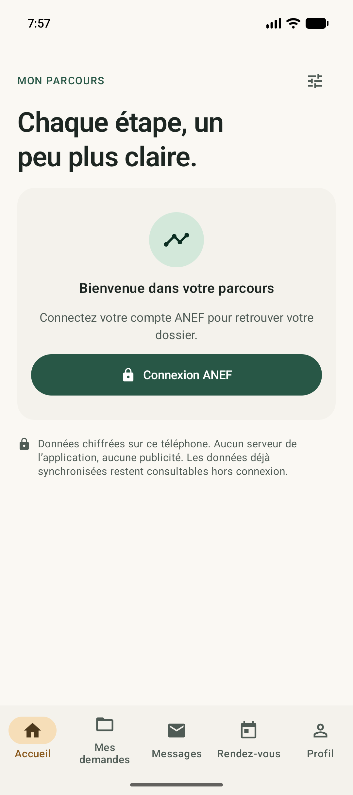
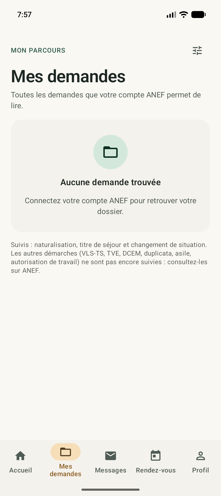
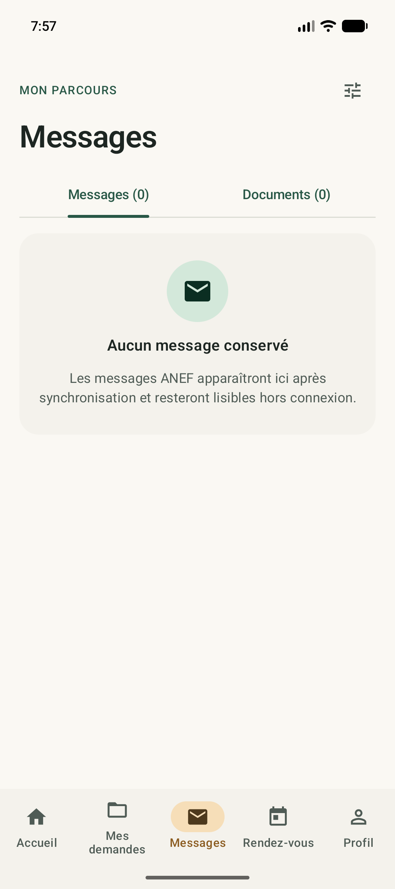
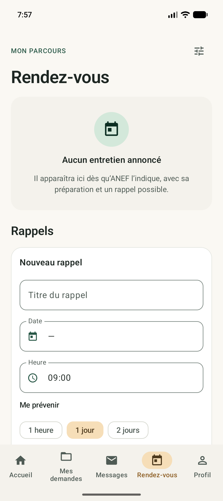
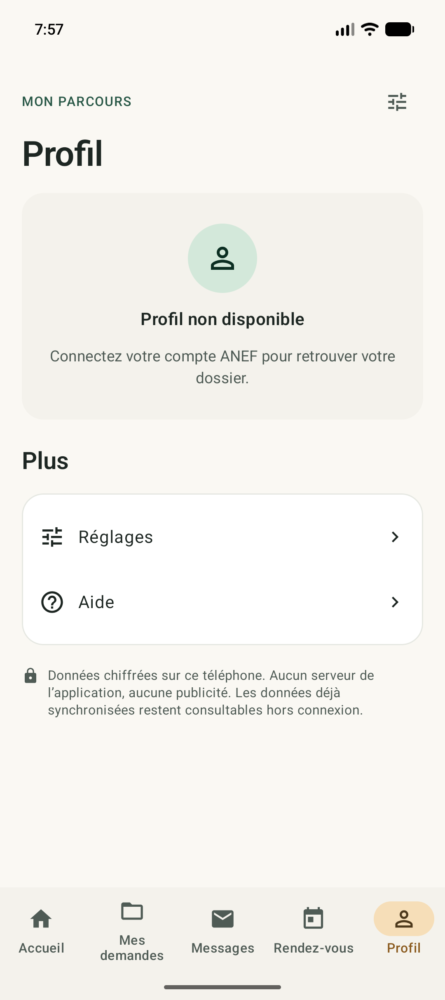
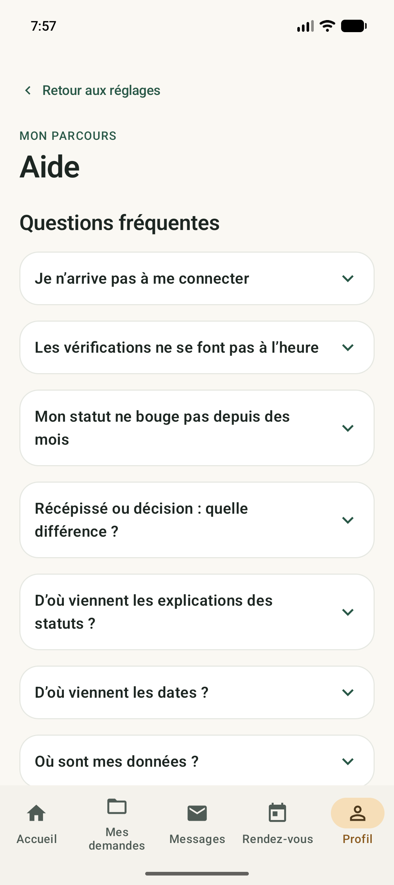

Comprendre les étapes
Consultez les statuts et explications des demandes accessibles depuis votre compte.
Retrouvez les informations de votre compte ANEF, comprenez votre parcours et gardez vos messages et documents à portée de main.
Français, anglais et arabe. Vos données restent sur votre téléphone.
Voir la version 0.5.3Version 0.5.3 disponible. Téléchargement public, sans compte GitHub.

Consultez les statuts et explications des demandes accessibles depuis votre compte.
Retrouvez les messages conservés et PDF téléchargés, y compris hors connexion.
Réglez les alertes, le suivi et les rappels. Android peut décaler les vérifications.
Naturalisation, titres de séjour et changements de situation selon les informations accessibles. Certains formats actifs restent à valider ; les autres démarches ne sont pas encore suivies.
Captures réelles de la version de développement 0.5.3 sans compte connecté. Aucun dossier personnel ou fictif ajouté.





Stockage local chiffré, protection Android Keystore et verrouillage facultatif. Sauvegardes cloud de l’app désactivées. ANEF et les services externes reçoivent les requêtes nécessaires à leur fonctionnement.